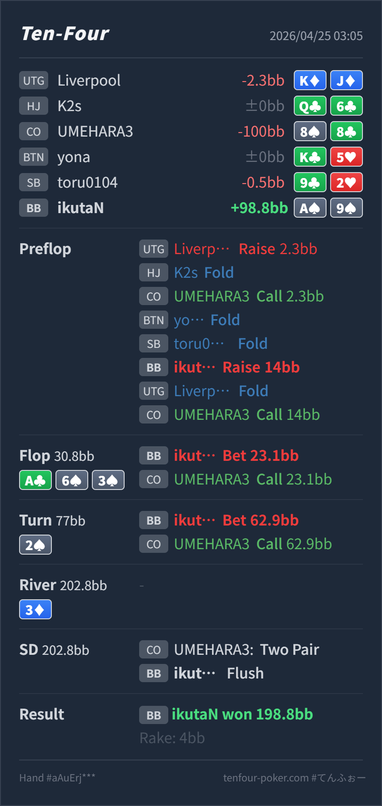

Preflop
自然だが境界A♠9♠ は suited ace + blocker で squeeze 候補です。ただし UTG 起点では dominated な Ax も残るため、pure value ではなく mixed な攻撃候補です。
主論点は、UTG open に CO cold call が入った spot で BB の A♠9♠ を 14BB squeeze に回すか、その後 A♣ 6♠ 3♠ / 2♠ で top pair + nut flush draw から nut flush になったときに、低SPRをどう使い切るかです。結論は、preflop の A♠9♠ squeeze は境界寄りですが十分候補で、postflop の大きい c-bet から turn shove までの流れはかなり自然です。大きく見直す hand ではありません。
A♠9♠8♠8♣A♣ 6♠ 3♠ / 2♠ / 3♦14BB の size と postflop の打ち切り方は筋が通っています。A♠9♠ は suited ace と blocker があるので候補には入りますが、毎回 squeeze する pure hand というより、call と混ぜてよい境界です。A♣ 6♠ 3♠ は、squeeze した BB 側に AA/AK/AQ や overpair があり、レンジ優位を取りやすい board です。A♠9♠ は top pair + nut flush draw で、実ハンドの current EQ もかなり高く、大きめに打って低SPRへ進めやすいです。2♠ で Hero は nut flush になり、pot 77BB に対して残り 62.9BB です。ここは lower flush、set、Ax + spade、pair + spade を逃がさず入れ切りたい node で、shove は自然です。3♦ は board pair ですが、turn 時点ではまだ paired board ではありません。turn shove の評価は river 結果ではなく、完成した nut flush で相手の続行レンジから最大を取れるかで見ます。A♠9♠8♠8♣2.3BB, HJ fold, CO call 2.3BB, BTN fold, SB fold, BB raise 14BB, UTG fold, CO callA♣ 6♠ 3♠ / 2♠ / 3♦23.1BB, CO call62.9BB, CO call8 and 3
自然だが境界A♠9♠ は suited ace + blocker で squeeze 候補です。ただし UTG 起点では dominated な Ax も残るため、pure value ではなく mixed な攻撃候補です。
A♣ 6♠ 3♠良いA♠9♠ は top pair + nut flush draw で、value と semi-bluff の中間ではなく、かなり強い打ち切り候補です。
2♠とても良い
Hero は nut flush です。A♠ を持つので相手の nut flush は消えており、lower flush と強い made hand から value を取る側です。
3♦
Hero は flush のまま勝っています。
| 論点 | その場で起きがちな見え方 | どこがズレやすいか | 次回の基準 |
|---|---|---|---|
A♠9♠ の squeeze 頻度 | suited ace で blocker もあり、dead money もあるので自動で squeeze したくなる | UTG open + CO call の時点で相手側の条件付き range はそれなりに強く、A9s は domination も受けます。squeeze 候補ではありますが、A5s/A4s や上位 value と同じ扱いで毎回押し上げる hand ではありません。 | squeeze できる hand と 毎回 squeeze する hand を分け、早い位置 open + cold call では suited ace 中位を mixed に置く |
| 低SPRでの postflop 計画 | flop で大きく打ったあと、turn で flush が完成すると相手が降りそうで小さくしたくなる | flop 23.1BB を打つと turn SPR はほぼ 1 未満になります。この形では、強い made hand に育ったときに小さく拾うより、相手の lower flush / set / spade 付き made hand をまとめて入れ切る方が自然です。 | 大きい flop c-bet を選ぶなら、turn の残りSPRまで含めて 打ち切る hand か を先に決める |
| ストリート | その時点の見え方 | 実ハンドの位置づけ | 評価 | その場の一手 |
|---|---|---|---|---|
| Preflop | UTG open に CO call が入っているので、BB は dead money を拾える一方、UTG の strong range と CO の condensed range の両方を相手にします。OOP なので size は大きめが必要です。 | A♠9♠ は suited ace + blocker で squeeze 候補です。ただし UTG 起点では dominated な Ax も残るため、pure value ではなく mixed な攻撃候補です。 | 自然だが境界 | 14BB は良い size です。頻度面では call も残し、相手が fold 多めなら squeeze を増やすくらいで整理したいです。 |
Flop A♣ 6♠ 3♠ | BB 側には強い Ax、overpair、nut spade が多く、CO 側には middle pair、set、suited broadway、spade draw が残ります。レンジ優位は BB 側にありますが、CO の continue も完全には薄くありません。 | A♠9♠ は top pair + nut flush draw で、value と semi-bluff の中間ではなく、かなり強い打ち切り候補です。 | 良い | 23.1BB の大きい c-bet は低SPRを作る意図と合っています。小さく打つ選択もありますが、この hand なら大きくて問題ありません。 |
Turn 2♠ | spade 完成で、CO の two-spade hand は made flush、one-spade の pair や pocket は draw 付き bluff-catcher になります。set や two pair もまだ redraw を持ちます。 | Hero は nut flush です。A♠ を持つので相手の nut flush は消えており、lower flush と強い made hand から value を取る側です。 | とても良い | 残り 62.9BB を shove で入れ切るのが自然です。ここで小さくすると、river の scare card で取り切れない場面が増えます。 |
River 3♦ | turn all-in 後なので判断はありません。board pair は一部の set / two pair にだけ関係します。 | Hero は flush のまま勝っています。 |
A9s は BB squeeze に使える suited ace ですが、早い位置 open + cold call では境界 hand として扱うと、preflop の攻めすぎを抑えられます。top pair + nut flush draw は、低SPRならかなり強い打ち切り候補です。flop で大きく打つなら、turn の残りスタックまで含めて計画します。88 のような pocket + spade を flop / turn で広く続けるなら、今回の大きい flop bet から turn shove はさらに利益が出やすいです。A9s squeeze 頻度を少し落として、postflop は value 寄りの hand で同じ line を使う方が安定します。